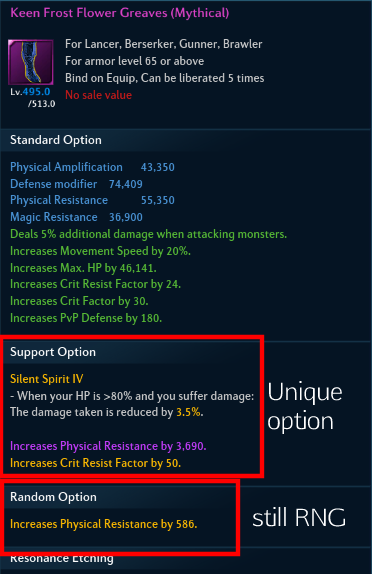

Luminous / Equipment / Frostflower Gear
Frostflower gear is the new gear set added in v114, as part of new season of TERA named TERA: FROZEN.
Items are divided into Legendary and Mythical rarities, differences being in main options and rank of the option.
Like previous Mahtnan gear, Frostflower gear has one unique option, two support options on the top and 3 random options at the bottom.
There is no upgrade to Frostflower gear from Mahtnan gear, but the newly added Transfer system allows players to transfer enchantment level, Random Options, and Etching from one gear to another same like in previous gear.

Support Options
Support Option is further divided into Unique Option and Support Random Option.
Different from regular Random Option, cannot be changed. Support Random Options also have relatively higher values than regular Random Options.
Unique Options
Unique Options are divided into tier I to tier V, and effect values vary appropriately.
Legendary rarity can have min. level 1 options and max. level 4. Meanwhile Mythical can have min. level 2 options all the way to level 5.
Weapon
| Destruction King | Reduces HP Recovery by 3% of Max HP every 2 seconds. HP drain effect ends if current HP is at or less than 30%. Skill power and healing skill recovery amount increased by 5/6/8/10%. |
| Firn Curse | When dealing damage, there is a 20/30/40/50% chance to apply Ice Curse and Absolute Zero. Ice Curse reduces the target's Physical and Magical Resistance by 320. Stacks up to 30 times. Absolute Zero deals 0.2% of the target's max HP as damage (max 100,000,000) after stacked 5 times with a 6/5/4/3 second cooldown. |
| Firn Frost | Attack Speed reduced by 10%. Skill power and healing skill recovery amount increased by 10/12/14/16%. When a crit power passive buff is activated, the Attack Speed reduction is temporarily nullified. |
| Whisper Moment | Continuously grant a buff every 5 seconds during battle. Increases skill power by 11/13/15/18% for 5 seconds. |
| Hunting Master | Increases skill power by 30/40/50% when attacking multiple monsters. |
| Storm Suppressor | Increases skill power by 12/14/16/18% when attacking enraged monsters. You take 15% additional damage from enraged monsters. |
| Chop-Chop Strike | Attack Speed increased by 10%. Skill Power and healing skill recovery amount decreased by 8/6/4/1%. |
| Dream Song: Sunlight | Increases Physical and Magical Amplification of you and all nearby allies within 15m by 3/3.5/4/4.5%. |
| Frost Flower Dream | Creates a cold aura with 3 stages. Each stage has a random change of activation. Cooldown of 8 seconds. Deals more damage to higher level targets. III: 10%, 1% IV: 11%, 2% V: 13%, 3% |
TANK: | Firn Curse
HEALER: | Dream Song: Sunlight
DPS: | Frost Flower Dream/Firn Frost/Storm Suppressor
PvP: | Firn Frost/PvP Weapon
Armor
| Life Source | Incoming healing skill recovery is increased by 17/22/27/32%. |
| Ancient Frost Flower | After the battle begins, the amount of incoming healing skill recovery is increased by 1/1/1.5/1.5% every 5 seconds. This effect stacks up to After the battle begins, the amount of incoming healing skill recovery is increased by 1/1/1.5/1.5% every 5 seconds. This effect stacks up to 35/50/35/50 times. |
| Oshar's Favor | Upon reviving, gain a shield that lasts for 6 seconds. Shield strength is 300.000/400.000/500.000/600.000. Cooldown of 20 minutes. |
| Frost Flower Blessing | Frostflower Blossom effect is applied every 5 seconds when in combat. At 5 stacks, incoming damage is reduced by 7/9/11/15%. All stacks are consumed when taking damage. |
| Piercing Vitality | Recovers HP equal to 0.3/0.4/0.5/0.6% of damage dealt. |
| Storm Protector | When your HP is over 80%: - Damage taken is reduced by 2.5/3/3.5/4%. - Damage taken from enraged monsters is reduced by 1.5/2/2.5/3%. |
| Bloomshield | Petal Shield is applied in combat. Reduces damage by 10%, and is removed when taking damage for 30/25/20/15 seconds. |
| Dream Song: Starlight | Increases Physical Resistance of you and all nearby allies within 15m by 3/3.5/4/4.5%. |
| Frost Flower Protection | Reduces incoming damage of you and all nearby allies within 15m by 2/3/4/5%. |
TANK: Frost Flower Protection
HEALER: Dream Song: Starlight
DPS: Storm Protector/Life Source
PvP: | Storm Protector/Oshar's Favor
Hand Armor
| Oath of Desire | Reduces the amount of incoming healing skill recovery by 20/30/40/50%. Skill power and healing skill recovery amount increased by 6/8/10/12%. |
| Frost Doctrine | Increase Power by 2 every 7/6/5/4 seconds while in combat. Effect can stack up to 60 times. |
| Master of Creatures | Decreases cooldown of crit power passive buffs by 9/11/15/20 seconds. Crit power passive buff effect duration increases by 1.2/1.5/2/3 seconds. While crit power passive buffs are applied, skill power and healing skill recovery increased by 15%. |
| Never Retreat | The cooldown of evasion skills is doubled. Classes that use Stamina or Resolve have their consumption doubled. Increases skill power and healing skill recovery amount by 8/10/12/14%. |
| Brutal Butcher | Increases skill power by 8/12/16/20% while dealing damage to a knocked down monster. |
| Shield Destroyer | Increases skill power by 20/30/40/50% while dealing damage to a target that has a shield. |
| Despair | When attacking a player, there is a chance to decrease the target's HP Recovery by 20/30/40/50% for 4 seconds. Recovery from beneficial effects does not decrease. Cooldown of 5 seconds. |
| Dream Song: Afterglow | Increases Physical and Magical Piercing of you and all nearby allies within 15m by 916/1100/1283/1468. |
| Frost Flower Tear | Launches a ball of snow at enemies.Deals more damage to higher level targets.Cooldown: 7/6/5/4 seconds. |
TANK: Oath of Desire/Frost Flower Tear
HEALER: Dream Song: Afterglow
DPS: Oath of Desire
PvP: | Shield Destroyer/Despair
Foot Armor
| Relentless Vigor | Recovers 1% of max HP every 4/3/2/1 seconds in combat. |
| Frost Flower Forbearance | Frostflower's Patience is applied every 5 seconds in combat. Reduces damage by 0.1% per stack. Stacks up to 20/30/40/50 times. |
| Survival Instinct | 6/9/12/15% reduced stun duration. Reduces incoming damage by 3% while knocked down. |
| Silent Spirit | When own HP is 80% or higher, damage taken is reduced by 2.5/3/3.5/4%. |
| Cold Chaser | Increases Movement Speed by 16/19/22/25. |
| Noble Blessing | When attacked by a monster while your HP is 50% or less, you gain a shield of 100.000/120.000/140.000/160.000 for 10 seconds. Recovers HP equivalent to 0.1% of damage dealt while attacking with a shield applied. Cooldown of 60 seconds. |
| Maximum Sense | When you take critical damage from a monster, you gain a shield of 80.000/100.000/120.000/150.000 for 6 seconds. Cooldown of 60 seconds. Reduces incoming critical damage by 11/14/17/20%. |
| Dream Song: Moonlight | Increases Magical Resistance of you and all nearby allies within 15m by 3/3.5/4/4.5%. |
| Frost Flower Charm | Greatly enhances certain Frostflower options: - Frostflower's Wish: Cooldown reduced by 1/1.4/1.7/2 seconds. - Frostflower's Tears: Snowball damage increased by 8/12/16/20%. |
TANK: Silent Spirit
HEALER: Dream Song: Moonlight
DPS: Silent Spirit
PvP: | Survival Instinct
Support Random Options
Support Random Options are similar to existing Random Options, except as Support Option cannot be changed, Support Random Options cannot be changed as well. Values are relatively higher than regular Random Options.
Weapon/Hand Armor
| Option | Tier I | Tier II | Tier III | Tier IV |
|---|---|---|---|---|
| Physical Amplification | 4,391 | 5,221 | 6,210 | 7,380 |
| Magical Amplification | 4,391 | 5,221 | 6,210 | 7,380 |
| Physical Piercing | 877 | 1,043 | 1,241 | 1,474 |
| Magical Piercing | 877 | 1,043 | 1,241 | 1,474 |
| Ignore Physical Resistance | 1,403 | 1,668 | 1,984 | 2,357 |
| Ignore Magical Resistance | 1,403 | 1,668 | 1,984 | 2,357 |
| Physical Crit Power | 0.04 | 0.05 | 0.06 | 0.07 |
| Magical Crit Power | 0.04 | 0.05 | 0.06 | 0.07 |
| Crit Factor | 10 | 13 | 16 | 18 |
Armor/Foot Armor
| Option | Tier I | Tier II | Tier III | Tier IV |
|---|---|---|---|---|
| Physical Resistance | 2,195 | 2,610 | 3,104 | 3,690 |
| Magical Resistance | 2,195 | 2,610 | 3,104 | 3,690 |
| Increase Max HP | 10,535 | 12,526 | 14,901 | 17,710 |
| Increase Max MP | 1,053 | 1,252 | 1,490 | 1,771 |
| MP Recovery (Every 5 Seconds) | 103 | 171 | 242 | 288 |
| Increased Healing | 5% | 6% | 7% | 8% |
| Reduced Crit Damage | 3% | 4% | 5% | 6% |
| Fixed Damage Reduction | 1,000 | 1,500 | 2,000 | 2,500 |
| Increased Crit Resist Factor | 30 | 40 | 50 | 60 |
Support Random Options
| Option | Tier I | Tier II | Tier III | Tier IV | Tier V | Tier VI | Tier VII |
|---|---|---|---|---|---|---|---|
| Physical Amplification | 489 | 586 | 683 | 780 | 975 | 1,170 | 1,366 |
| Magical Amplification | 489 | 586 | 683 | 780 | 975 | 1,170 | 1,366 |
| Physical Piercing | 97 | 117 | 136 | 156 | 195 | 234 | 273 |
| Magical Piercing | 97 | 117 | 136 | 156 | 195 | 234 | 273 |
| Ignore Physical Resistance | 195 | 234 | 273 | 312 | 390 | 468 | 546 |
| Ignore Magical Resistance | 195 | 234 | 273 | 312 | 390 | 468 | 546 |
| Physical Crit Power | 0.003 | 0.006 | 0.01 | 0.012 | 0.014 | 0.017 | 0.02 |
| Magical Crit Power | 0.003 | 0.006 | 0.01 | 0.012 | 0.014 | 0.017 | 0.02 |
| Crit Factor | 1 | 2 | 3 | 4 | 5 | 6 | 7 |
| Physical Resistance | 244 | 293 | 342 | 390 | 489 | 586 | 684 |
| Magical Resistance | 244 | 293 | 342 | 390 | 489 | 586 | 684 |
| Increase Max HP | 1,174 | 1,407 | 1,640 | 1,874 | 2,342 | 2,811 | 3,280 |
| Increase Max MP | 117 | 140 | 164 | 187 | 234 | 281 | 328 |
Enchanting Materials
The respective required enchanting materials are dropped in dungeons according to rank. Enchanting materials for levels 4 to 6 can be combined by right-clicking and transformed into materials of the next level.
Precious Sky Lotus (Enchanting Material 1-12) is available from Development Merchants in the capital cities.
| Icon | Name | Source(s) |
|---|---|---|
| Vitality Fragment | Thaumetal Refinery Macellarius Catacombs |
|
| Stamina Seal | Forbidden Arena (Hagufna) Fusion Laboratory Can be combined: 8x Stamina Seal -> 1x Victory Glyph |
|
| Victory Glyph | Shadow Sanguinary (Hard) Ice Throne Normal mode Sky Cruiser Endeavor (Hard) Can be combined: 6x Victory Glyph -> 1x Prestige Emblem |
|
| Prestige Emblem | Hall of Argon Queen Ice Throne of Chaos Antaroth Abyss (Hard) |
|
| Luminous Frost Flower Pollen | Thaumetal Refinery Macellarius Catacombs |
|
| Magnificent Frost Flower Pollen | Dismantling Frostflower [Mythical] equipment | |
| Precious Sky Lotus | Development merchant in any main city (Highwatch/Velika/Kaiator/Allemantheia) |
Enchantment:
Weapon
| Enchantment | -> +1 | -> +2 | -> +3 | -> +4 | -> +5 | -> +6 | -> +7 | -> +8 | -> +9 | -> +10 | -> +11 | -> +12 | TOTAL |
|---|---|---|---|---|---|---|---|---|---|---|---|---|---|
| Vitality Fragment | 2 | 2 | 2 | 2 | 2 | 2 | 2 | 2 | 2 | 2 | 3 | 3 | 26 |
| Stamina Seal | - | - | - | 7 | 8 | 11 | - | - | - | - | - | - | 26 |
| Victory Glyph | - | - | - | - | - | - | 9 | 11 | 14 | - | - | - | 34 |
| Prestige Emblem | - | - | - | - | - | - | - | - | - | 12 | 14 | 15 | 41 |
| Luminous Frost Flower Pollen | 15 | 17 | 18 | 20 | 21 | 23 | 24 | 26 | 27 | - | - | - | 191 |
| Magnificent Frost Flower Pollen | - | - | - | - | - | - | - | - | - | 4 | 5 | 6 | 15 |
| Precious Sky Lotus | 2 | 3 | 4 | 4 | 5 | 6 | 8 | 10 | 15 | 17 | 19 | 37 | 130 |
Armor/Foot Armor
W.I.P
| Enchantment | -> +1 | -> +2 | -> +3 | -> +4 | -> +5 | -> +6 | -> +7 | -> +8 | -> +9 | -> +10 | -> +11 | -> +12 | TOTAL |
|---|---|---|---|---|---|---|---|---|---|---|---|---|---|
| Vitality Fragment | 1 | 1 | 1 | 1 | 1 | 1 | 1 | 1 | 1 | 1 | 2 | 2 | 14 |
| Stamina Seal | - | - | - | 7 | - | - | - | - | - | - | |||
| Victory Glyph | - | - | - | - | - | - | - | - | - | ||||
| Prestige Emblem | - | - | - | - | - | - | - | - | - | ||||
| Luminous Frost Flower Pollen | 11 | 13 | 15 | 16 | 17 | 19 | 20 | 22 | 24 | - | - | - | |
| Magnificent Frost Flower Pollen | - | - | - | - | - | - | - | - | - | ||||
| Precious Sky Lotus | 1 | 2 | 3 | 3 | 4 | 5 | 6 | 8 | 10 | 15 | 17 | 19 |
Hand Armor
| Enchantment | -> +1 | -> +2 | -> +3 | -> +4 | -> +5 | -> +6 | -> +7 | -> +8 | -> +9 | -> +10 | -> +11 | -> +12 | TOTAL |
|---|---|---|---|---|---|---|---|---|---|---|---|---|---|
| Vitality Fragment | 2 | 2 | 2 | 2 | 2 | 2 | 2 | 2 | 2 | 2 | 3 | 3 | 26 |
| Stamina Seal | - | - | - | 7 | 8 | 11 | - | - | - | - | - | - | 26 |
| Victory Glyph | - | - | - | - | - | - | 9 | 11 | 14 | - | - | - | 34 |
| Prestige Emblem | - | - | - | - | - | - | - | - | - | 12 | 14 | 15 | 41 |
| Luminous Frost Flower Pollen | 15 | 17 | 18 | 20 | 21 | 23 | 24 | 26 | 27 | - | - | - | 191 |
| Magnificent Frost Flower Pollen | - | - | - | - | - | - | - | - | - | 4 | 5 | 6 | 15 |
| Precious Sky Lotus | 2 | 3 | 4 | 4 | 5 | 6 | 8 | 10 | 15 | 17 | 19 | 37 | 130 |
Transfer system
Once you reach a certain enchantment level on a piece of gear, you can transfer the enchantment level, Random Options, and etching to another gear of the same part. this requires a Transcendant Jewel of Magic Transference.
With 3x Jewels of transference you can only transfer the random options, without losing your enchantment on the target item.
Crafting
Frost flower gear can be crafted. Crafting designs can be purchased from Crafting NPCs in major cities from the Smelting NPC.
You will find two key items - Crafting design A) and B) and Luxury craft kits.
You need 20 of the crafting kits to craft one of the tokens. So 80 in total.
Mythical gear can be crafted mainly, as its the best source of obtaining this rarity of items. There are two types of tokens:
A) - Frozen Dream Song - You need 7 of these each time to craft which is a total of 28 to make the full set, they drop from dungeons and can obtained dismantling any frost flower gear.
B) - Frozen Dream Song - Brilliant ice crystal can be obtained by combining 3 splendid frost flower pollens. Those can be obtained by dismantling mythical gear. Its mainly a way to recycle mythical gear which you wont use.
Both crafts can 'crit' and give you a special Splendid Frozen Dream Song token which can give you items which are Physical(Keen) with only physical options.If your items are eMagical(Mysterious) it will have only magical options. You will never get physical with magical options and vice versa from these tokens.
These boxes CANNOT be stored in banks of any kind, or traded.
However the Items themselves once opened can be sold/banked as you don't bind them.